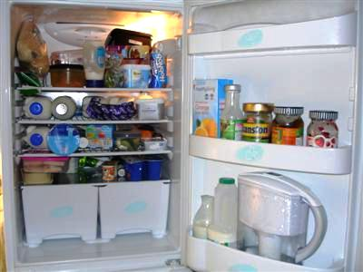

Ладилник (фрижидер) е електричен уред што служи за ладење или замрзнување. Најширока примена има во домаќинствата каде се користи за чување храна на ниски температури.Ладилникот се состои од топлински изолиран простор и работен дел со чија помош топлината од неговата внатрешност се пренесува во надворешната средина (на пример, собата во која се наоѓа). Работниот дел на ладилникот се состои од: топлинската пумпа која го подига притисокот на работното тело (обично гас, најчесто некој фреон, а порано амонијак), испарувач - фреон кој на снижен притисок ја прима топлината од производите во топлински изолираниот простор на ладилникот и испарува, вентил за придушување - во него се врши адиабатско придушување (притисокот опаѓа без размена на топлина), кондензатор - се наоѓа се од надворешната страна на топлински изолираниот простор, при што на зголемен притисок фреонот ја предава топлината на околината и се кондензира. 